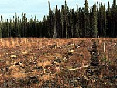

Directions: Read the statement and choose the most appropriate response. You may click the helpful hints button at any time. Good luck!
1.
a. during the retreat of the glaciers
a. being missed by glacial ice
a. exist for a very short period of time
2.
a. the collapse of the fur trade
a. sawtimber came into great demand, resulting in the harvesting of mature pine and oak
a. cutting the fallen tree with a sharp instrument and shaping it into the characteristic shape
a. square lumber
a. squaring
3.
a. shantymen
a. shantymen and teamsters
a. artisans
a. shantymen
a. sawmill
4.
a. The Dominion Lands Act
a. 1850
a. increase in tourism
a. 1940's
a. 1940's
5.
a. as sources of medicinal products
a. indirect employment in a primary industry
a. primary forest industries
a. direct employment
a. potpourri
6.
a. trembling aspen
a. tamarack and white spruce
a. white and black spruce
a. white birch and green ash
7.
a. forest management license agreement
a. forest management license agreement
a. the leftover trunks of trees in a harvested area
a. shelterwood cutting

a. it allows for more productivity and encourages the growth of tree species otherwise suppressed by taller trees
8.
a. the amount of annual growth of a forest is equal to or greater than the harvested amount
a. after a sample section is harvested and measured
a. board foot
a. tonnes of wood chips
9.
a. inventory analysis of the forests
a. the establishment of trembling aspen seedlings
helpful hint
10.
a. satellite images of the area
a. show the amount of hardwood species present in an area
a. genetic mutation
a. interpretation of drawings from forest surveys
b. following the warming and drying of the land after the last ice age
c. prior to the formation of the lakes in the province
d. as glaciers retreated after the last ice age
b. scouring of the surface by ice
c. deposition of rock and soil material by glacial ice
d. afforestation programs
b. compete with other plants for the establishment of a climax species
c. help in the establishment of wildlife habitat
d. aid in the formation of soil
b. Aboriginal groups seeking materials for shipbuilding
c. exploration of the Hudson Bay and its tributaries
d. the British army requiring supplies
b. fires destroyed the forests
c. the technique called "squaring" made use of only a portion of the tree
d. reforestation techniques could not keep up with the demands on the stands
b. building ships using lumber from pine stands
c. harvesting trees in a characteristic square shaped-area within the stand
d. using all parts of the fallen tree by shaping each into the characteristic square shape
b. beams and boards
c. newsprint
d. pulp and paper
b. hewing
c. reforestation
d. shipbuilding
b. artisans
c. journeymen
d. tradesmen
b. shipwrights and joiners
c. sawmill workers and lumbermen
d. cartwrights and factory workers
b. shantymen
c. sawmill workers
d. factory workers
b. sawmill workers
c. factory workers
d. craftsmen
b. shanty camps
c. factory
d. artisan's shop
b. The Saskatchewan Forestry Act
c. Saskatchewan Environment and Resource Management
d. The Hudson Bay Trade Agreement
b. 1870
c. 1872
d. 1933
b. roadbuilding and the establishment of northern communities
c. increase in demand of forest products
d. all of the above
b. 1950's
c. 1960's
d. none of the above
b. 1950's
c. 1960's
d. 1970's
b. for recreation
c. for economic activities such as berry picking
d. all of the above
b. direct employment in a primary industry
c. indirect employment in a secondary industry
d. direct employment in a secondary industry
b. secondary forest industries
c. tertiary forest industries
d. indirect employment industry
b. secondary employment
c. indirect employment
d. employment as a result of a tertiary industry
b. maple syrup
c. newsprint
d. camera film
b. white elm
c. white birch
d. Manitoba maple
b. jack pine and balsam fir
c. lodgepole pine and black spruce
d. Scotch pine and larch
b. jack pine and tamarack
c. white elm and green ash
d. white birch and trembling aspen
b. white elm and black poplar
c. plains cottonwood and Manitoba maple
d. white elm and white birch
b. timber permit
c. forest product field permit
d. term cutting agreement
b. timber permit
c. forest product field permit
d. term cutting agreement
b. royalties paid to a company in exchange for harvesting the forest
c. company compliance with specific forest management practices
d. the replanting of deforested areas
b. seed-tree cutting
c. harvest cutting
d. intermediate cutting
b. all trees of one type may be harvested at once
c. it allows insect infested trees to be removed, allowing for healthy growth of remaining trees
d. only mature trees are removed, allowing younger trees to flourish
b. removing damaged trees to allow room for healthy trees to develop
c. harvesting enough trees to sustain the forestry industry
d. selective harvest of sustainable trees in a forest stand
b. during the harvest period, and measures can be taken of fallen trees
c. using board feet and cubic feet measures
d. none of the above
b. tonne
c. cubic foot
d. cord
b. cords of wood
c. tree height
d. tree trunk diameter
b. establishing harvest volumes
c. identifying areas in need of reforestation
d. inspection by
SPRC to ensure environmental concerns are dealt with appropriately
b. diseased hardwood seedlings
c. production of cones of softwood species
d. regeneration of softwood species such as jack pine
b. aerial survey data
c. computer generated forest models
d. mechanical harvesters that record felled trees
b. predict areas of possible fire damage
c. show herbicide and fertilizer requirements of an area
d. reveal genetically altered tree species
b. making use of technology for living things
c. experimentation on the effects of a superior insecticide
d. none of the above
b. weather as a control of forest fires
c. fertilizer applications during reforestation projects
d. genetic manipulation for the production of superior plants